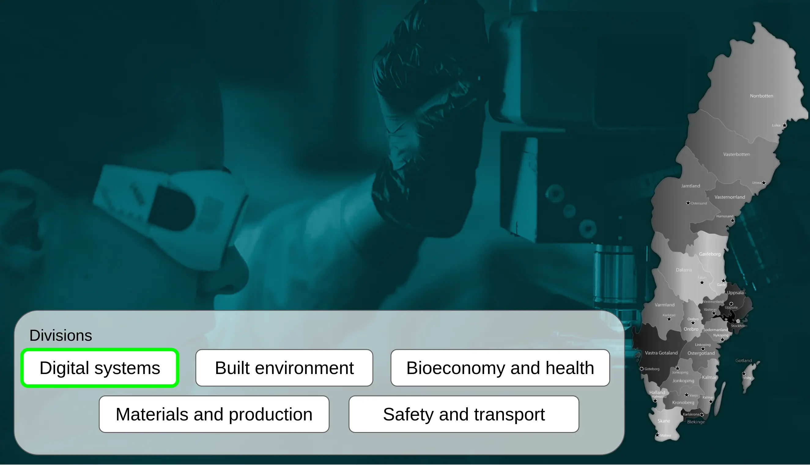
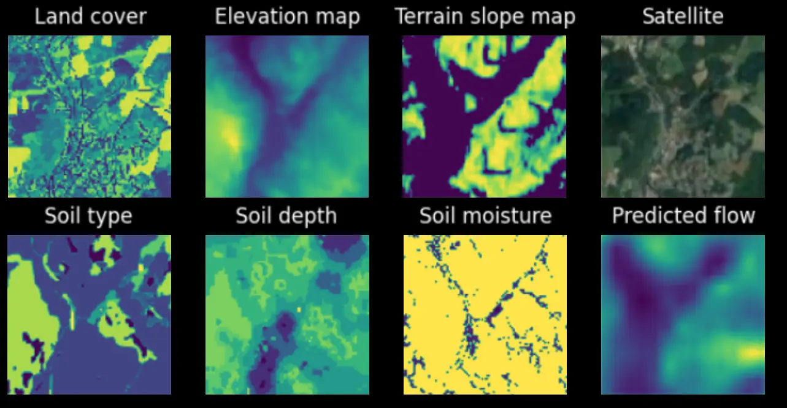
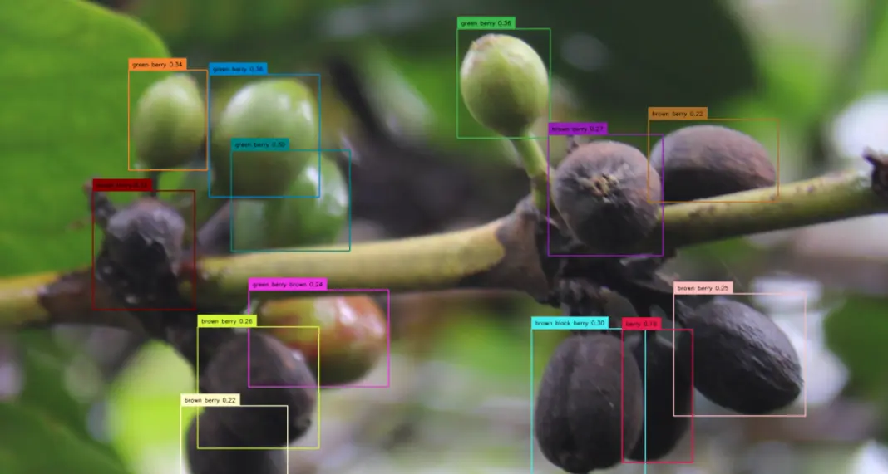
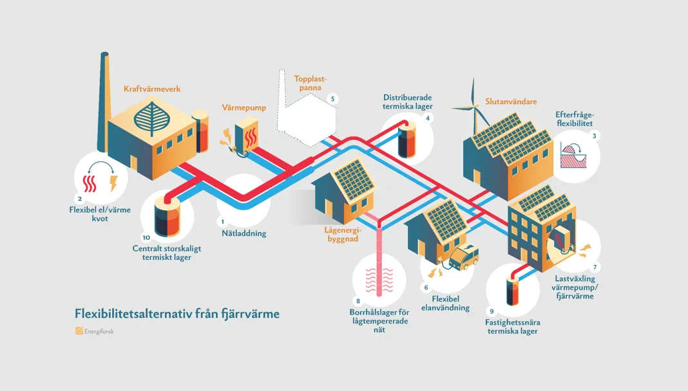
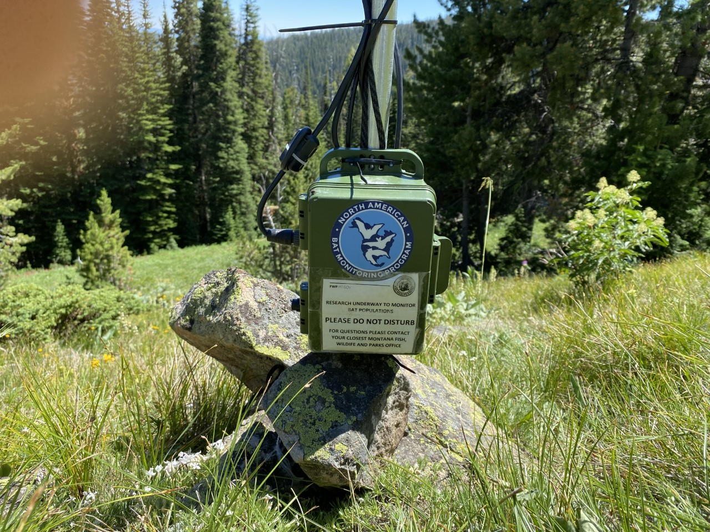
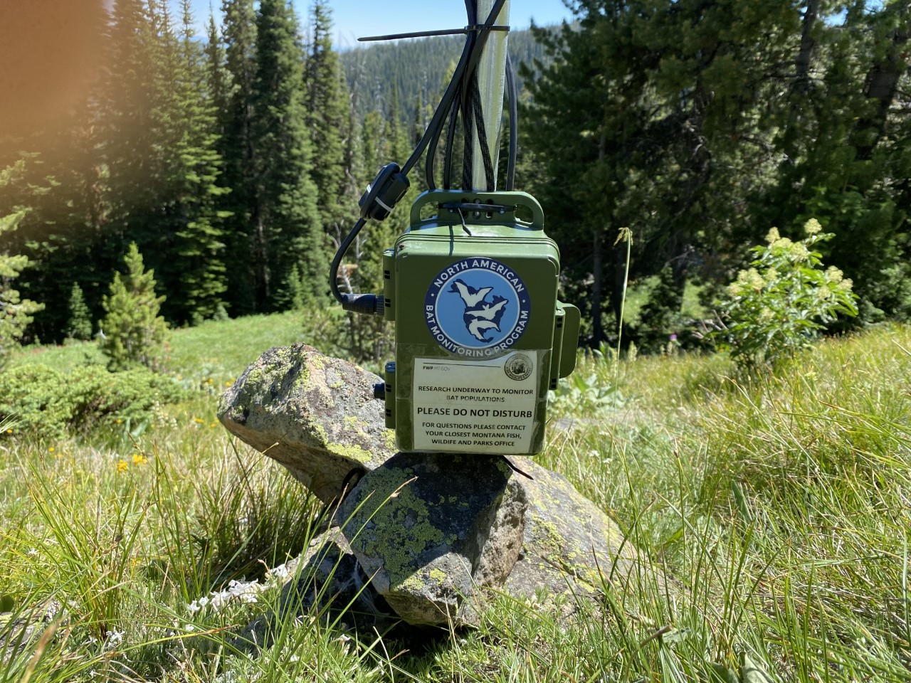
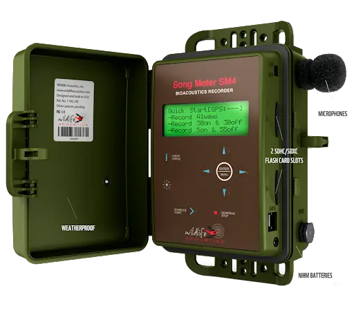
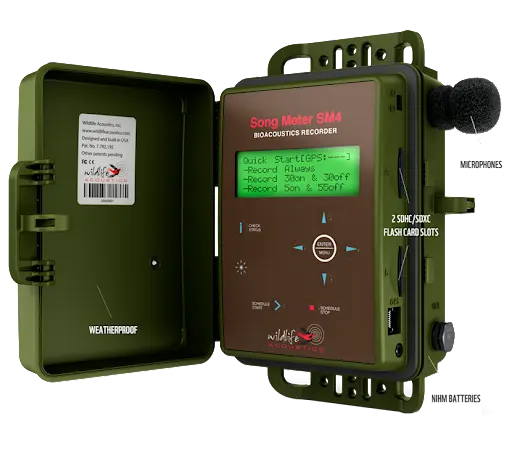

AI:s dubbla roll i klimatfrågan
Utmaningar och möjligheter för miljön
Olof Mogren, Forskningsledare AI, RISE

RISE
Research Institutes of Sweden
- Sveriges forskningsinstitut
- Stödjer näringsliv och offentlig sektor
- ~3000 medarbetare på 35 orter
- Extrem bredd av expertis

Chatbottar och Språkmodeller
- Stora språkmodeller (Large Language Models; LLMs)
- Varje fråga till en stor modell drar upp till 10x mer energi än en Google-sökning
- Datacenter står idag för ca 1-2% av global elanvändning (ökar troligen)

Del 2: AI som verktyg för klimatet

Jordobservation
för våtmarker och kolsänkor
- Genererade kartor är avgörande för:
- Återvätning av våtmarker
- Biologisk mångfald
- Klimatanpassning
- Kolinlagring

Prognoser för vattenflöden
- Detaljerade kartor över vattenflöden i Sverige och Brasilien
- Kombinerar satellitbilder, höjddata, regn och temperaturhistorik
- Viktigt för att hantera torka och översvämningar
Klimatförändringar
driver krisen inom biologisk mångfald

Tjädrar och vindkraft
Målkonflikter i den gröna omställningen
- Vad får vindkraftsbyggen för effekt på hotade arter?
- Inspelningar av ljud vid vindkraftsverk där tjädrar lever
- Räkna individer, identifiera olika typer av läten
- Pågående arbete med Vattenfall, SLU och Naturvårdsverket



Smart jordbruk
Klimatanpassning av grödor
- Hjälp att upptäcka infekterade växter (t.ex. Kaffebärssjuka)
- Sjukdomen är starkt kopplad till klimatförändringar (regn, fukt, temp)
- AI hjälper bönder att agera i tid med mindre kemikalier
AI för fysik - snabbare simuleringar
- Ersätta tunga beräkningar (väder, vind, flöden) med snabba AI-modeller
- Sparar energi och möjliggör bättre prognoser
AI är ingen snabb, enkel lösning

Tech-lösningar för naturen

Optimering av energisystem
Prediktivt underhåll för fjärrvärme
- Hitta komponenter som snart kommer behöva service
- Minskar svinn och energiförluster
- Samarbete mellan RISE, Energiforsk och operatörer


 



 
